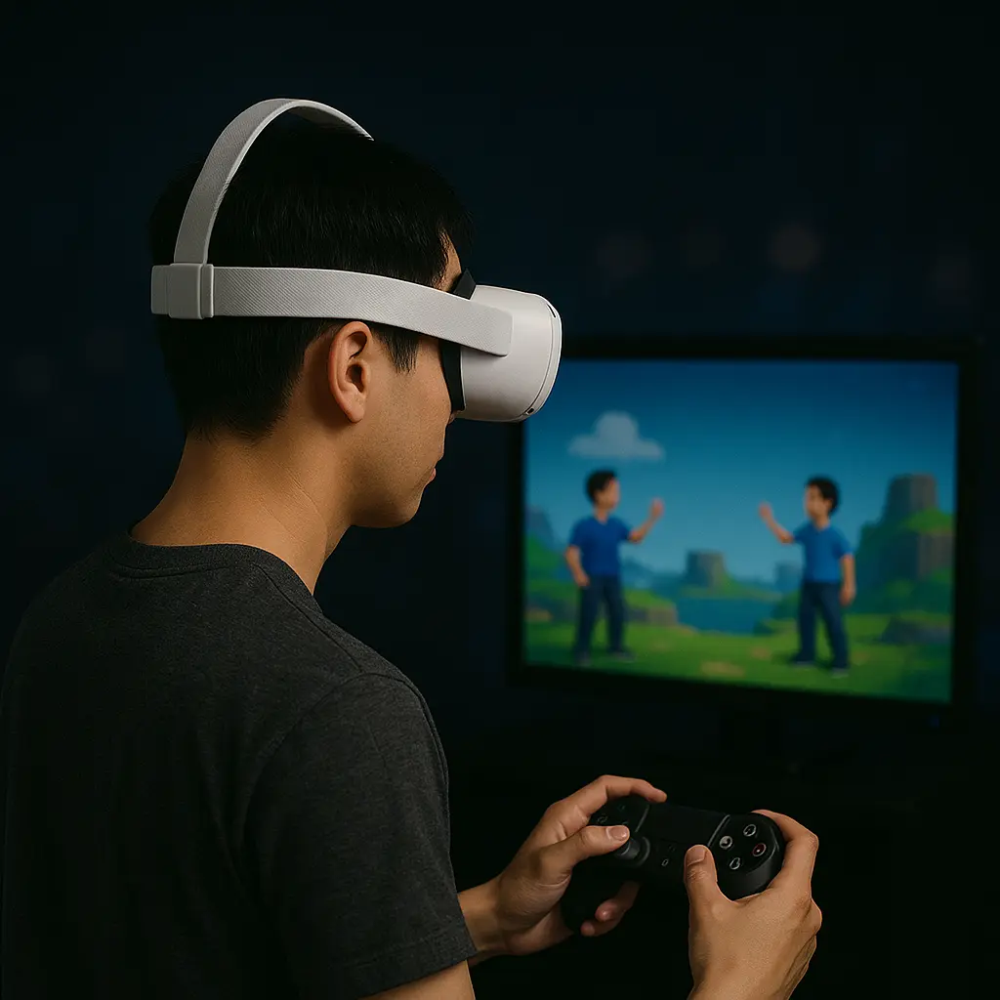

AFTERGLOW, EVERGLOW
영원, 영원히 아프로디테처럼 빛나기를
AFTERGLOW
제 24회 동덕여자대학교 미디어아트학과 졸업전시AFTERGLOW는 아침의 찬란한 시간을 담아내어, 가장 아름다운 순간을 간직한 전시입니다.
우리가 가장 아름다운 순간은 지나가기 전입니다. 아침은 하루이지만은 만 새로운 시작을 일깨우는 희망,
밤낮없이 그리고 온데 간데 시절을 지나, 오늘의 일상 속에서 빛나 있는 우리들의 꿈을 이뤄낸 미디어학과로 성장해 드립니다.
이제, 남은 시간의 끝자락에 아침은 영원의 모든 시간이 모여든 가장 찬란한 영원을 담아내고 싶습니다.
작품소개
